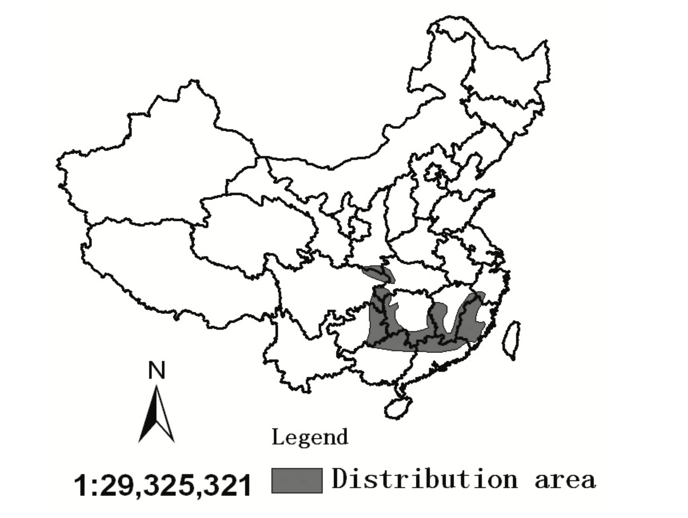

Taxonomy: Mammal Kingdom: Animalia Phylum: Chordata Class: Mammalia Order: Carnivora Suborder: Feliformia Family: Felidae Subfamily: Pantherine Genus: Panthera Species: P. Tigris Subspecies: P. T. Tigris
The fact for this tiger is it have only 150 individuals survive in captivity to data. And it is truly extinct in the wild environment. Because the adaptation, it do look strong, but actually their predatory efficiency is very low. Also, human activities like hunting them for medical use is high. So, human do killed them a lot before. Further, they do not have a high production ability. Tigers like to be alone especially this one. They will only spend time with their mates while they are at oestrus.

Habitat: 1. Mainly in southern China's tropical rainforests and broadleaf evergreen forests. 2. Vast mountainous areas of China from the Shandong Peninsula southward, mainly in Hunan, Guangdong, Jiangxi and Fujian provinces. Near water and mountains. 3. Four protection zones for the rare animal species in Jiangxi, Guangdong, Hunan, and Fujian provinces of China. 4. In Meihua Mountain, Fujian Province, since the establishment of the protection zone in 1998, more than 20 South China tigers have been bred.
Appearance: 1. Size: "The males of this subspecies reach a length of around 91-104 inches (230-265 cm) between the pegs, while the females can grow up to 87-94 inches (220-240 cm) between the pegs."(Chakrabarti, 2021) 2. Weight: "CMales tigers weigh between 287 and 386 lbs (130-175 kg), and the females between 243 and 254 lbs (110-115 kg)."(Chakrabarti, 2021) 3. Color: "They have black stripes on an orange background, undersides are white, as are the insides of the legs and parts of the face."(Chakrabarti, 2021)